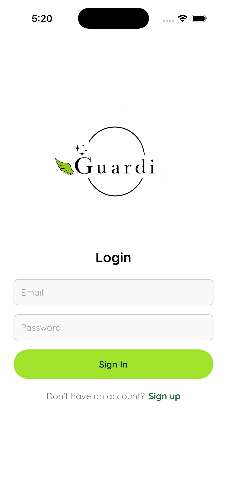
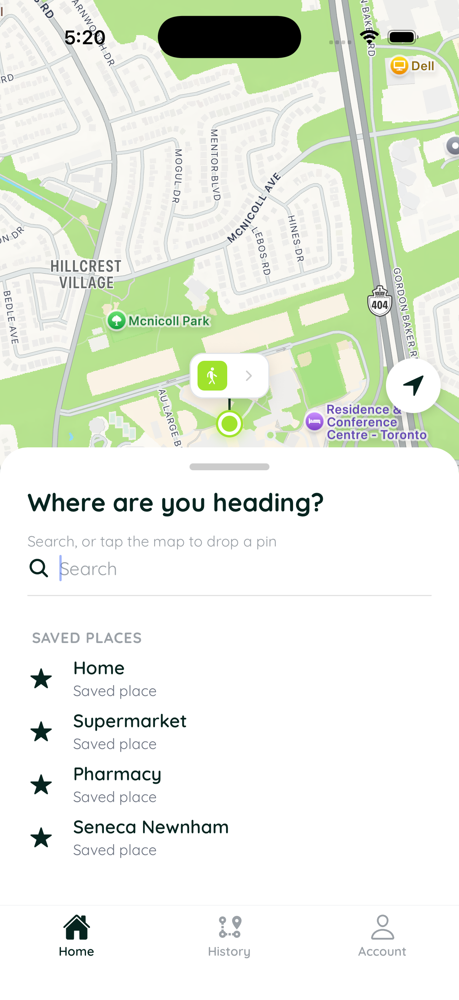
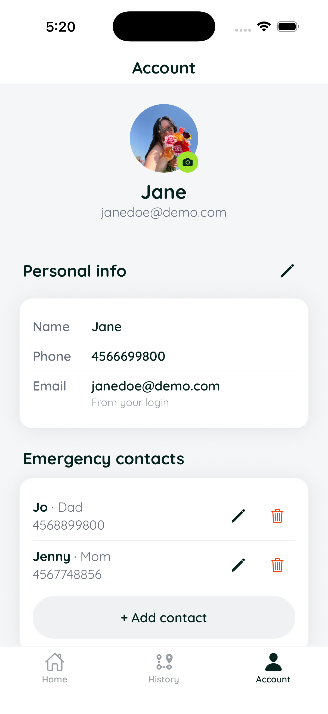

Mobile Application • WEB530 • Team Project
Guardi
Safer every step home.
A safety companion application for people who walk alone, combining trip monitoring, real-time location synchronization, and automated safety alerts.
How Guardi Works
Plan
The walker selects a destination, adds optional stops, and reviews their route.
Start
The trip is confirmed and monitoring begins.
Monitor
Location and trip status are synchronized with the operator dashboard.
Respond
SOS, off-route, stopped movement, or missed check-ins can trigger an alert.
Finish
The walker taps "I'm Safe" to end the monitoring session.
MONITORING
Operator Dashboard
Guardi includes a web-based operator dashboard that allows monitoring staff to view active walkers and follow their current location in real time.
When a safety alert is triggered, the selected walker's status is immediately reflected on the dashboard, allowing the operator to respond to the situation.
Overview
Guardi is a safety companion application designed to help people who are walking alone stay connected and monitored throughout their journey.
Users can create a trip, enter their destination, and allow the application to monitor their journey while they travel.
SAFETY SYSTEM
Designed around four safety triggers
Guardi continuously monitors an active trip for situations that may require attention. Four safety triggers can initiate an alert and escalate the situation to the monitoring operator.
SOS
The walker can manually trigger an emergency alert when immediate assistance is needed.
Off-Route
The system detects when the walker moves away from their planned route.
Stopped Movement
Extended periods without movement can trigger additional monitoring.
Missed Check-In
A missed check-in countdown can escalate the situation to the monitoring operator.
The Problem
Walking alone can sometimes feel unsafe, especially when travelling at night or in unfamiliar areas. We wanted to create an application that could provide users with an additional layer of security while travelling alone.
The Solution
Guardi allows users to create and monitor a trip while sharing important information with their designated contacts.
The application combines location tracking, trip management, and safety monitoring to help users feel more secure during their journey.
Key Features
Trip Planning
Users can create a trip by entering their starting location and destination.
Live Location
The application tracks the user's location while their trip is active.
Safety Monitoring
Users can monitor their journey and receive additional safety support.
Alerts
The application can respond to situations that may require additional attention.
Technologies
Project Screenshots



My Contribution
As part of the Guardi team, I focused primarily on the operator dashboard and account lifecycle functionality.
Operator Dashboard
Developed the dashboard interface used to monitor active walkers and view trip activity.
Trip & Alert Sync
Worked on synchronization services connecting trip and alert information between the application and dashboard.
Operator Escalation
Implemented the operator escalation functionality for situations requiring additional attention.
Account Lifecycle
Implemented account deletion and profile cleanup functionality.
What I Learned
Through Guardi, I gained experience developing a mobile application as part of a team and learned more about integrating different components of a software project.
The project also helped me improve my understanding of GitHub, Firebase, mobile development, and collaborative software development.